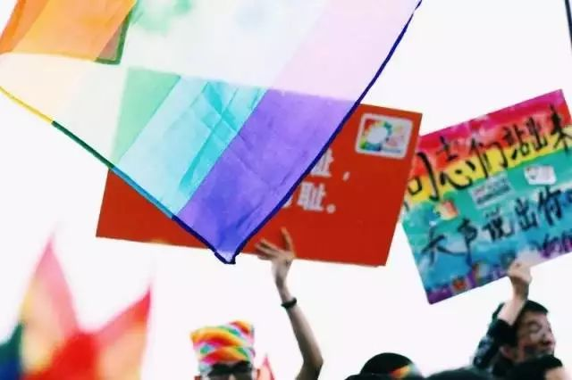
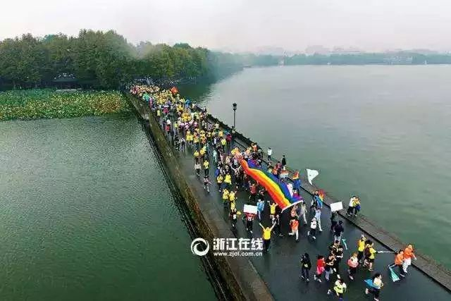
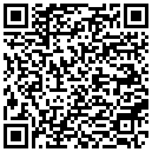

当咨询师遇上性少数——专业的培训必不可少！【性少数人群友善咨询师公益培训·第十六期·杭州站】
2001年修订的《中国精神障碍分类与诊断标准（第三版）》中已经将同性恋剔除了出去，但是保留了“自我认同不和谐”的部分。
于此同时，中国国内很多心理学相关书籍仍然将同性恋视为“精神疾病”，各种治疗方法仍然出现在这些书籍中，甚至仍然有某些专家在心理培训课上教授如何“扭转治疗”。
精神卫生及心理从业人员中，全面了解多元性别和性少数群体相关知识的咨询师寥寥无几……怎么办？！

路漫漫其修远兮，
其实，
我们一直未停下脚步：
2012年，
我们开始了“LGBT友善咨询师”培训的燎原之路
2012年 第一期 北京
2013年5月 第二期 北京
2013年9月 第三期 北京
2014年4月 第四期 天津
2014年7月 第五期 北京
2014年11月第六期 广州
2015年5月 第七期 北京
2016年2月 第八期 西安
2016年5月 第九期 北京
2016年7月 第十期 上海
2016年8月 第十一期成都
2016年11月第十二期广州
2017年1月 第十三期上海
2017年3月 第十四期武汉
2017年5月 第十五期北京
2017年9月 第十六期杭州

（图为2016年杭州国际马拉松中的"彩虹"）
什么是LGBT友善咨询师培训？
我们为什么要办这样的培训？


(按住上方图片可左右滑动查看)
以上这些文字，很多心理咨询师都不陌生。
这些书籍中同性恋被称为“变态”及“异常”！
并且试图分析同性恋的成因以及矫正方法……
这样的书籍影响着众多的心理工作者们，使得心理工作者们对LGBT群体心理特征和他们普遍面临的压力不够清晰，无法有效的开展工作；甚至促使心理工作者们抱有 “性取向可以通过治疗改变”的认识误区，对性少数来访者采取“扭转治疗”！
这不仅伤害了来访者，也阻碍了咨询师自身的职业发展。
可能大部分心理健康领域从业人员或多或少接触过性少数人群，
占人口比例约1%的LGBT相比异性恋人群有高得多的心理辅导/治疗需求，然而，国内很多心理学相关书籍仍将同性恋视为“精神疾病”，某些专家甚至在心理培训课教授“如何扭转治疗“。
即使具备对多元性取向的开放心态，心理健康从业人员在工作中仍困难重重：
顺性别，跨性别，酷儿、男性/女性气质，刻板印象，角色分工,这些概念的内涵是什么？它们如何相互影响？
对性少数人群的生活和心理带来了哪些影响？
你身边那些可能隐藏的LGBT的日常是什么样子？
他们和异性恋人群一样有各种心理困扰，同时他们面对的议题又和异性恋人群有显著差异。LGBT经常会因为哪些事情来到咨询室，咨询师又该如何处理和应对呢？
我们希望通过培训，增进心理工作者们对相关概念的理解及对性少数群体生活各方面的了解，消除性取向相关的认知误区，提高服务性少数群体的专业能力。

一、参加专业的LGBT人群心理咨询基础课程，获得对性少数群体全面、深层次的认识；
二、参与讨论丰富的LGBT人群案例，面对面接触性少数人群；
三、通过全程参与提交培训心得者：
1.获得北京同志中心颁发的培训结业证书；
2.经评估后可加入全国友善心理咨询师网络;
3.得到北京LGBT中心后续的讲座案例督导支持，以及更多心理咨询相关主题活动的邀约；
4.获得申请加入LGBT友善心理咨询机构及为性少数人群提供优质心理咨询服务的机会。


课程安排 | 主讲人及内容梗概 | 时间 | |||
第一天（9月22日 周五） | |||||
开幕式 | 向阳花开及北京同志中心工作人员致开幕欢迎辞 | 09:00– 09:10 | |||
认识多元性别与性倾向 | 暖阳 生理/认同/喜欢的性别分别所指什么？性倾向和性行为有关联吗？顺性别，跨性别，酷儿都有怎样含义？男性/女性气质，刻板印象，角色分工,这些都是如何和上述相互影响？多元性别部分将尝试解读这一切。 | 09:10– 10:30 | |||
茶歇 | |||||
LGBT人群零距离1： 当心理咨询师与性少数群体面对面 | LGBT社群人员分享 包括男同性恋、女同性恋、双性恋、跨性别等，讲述个人的自我认同的心路历程和成长故事。 | 10:40- 11:40 | |||
午休 | 午餐及休息时间 | 11:45– 13:00 | |||
性少数群体生存现状与挑战 | 王芸 同性恋一说的起源/性少数群体的生存现状及的核心议题。 | 13:00- 14:30 | |||
茶歇 | |||||
LGBT人群的家暴现状及如何开展服务 | 李悦 1. 家庭暴力的定义，类型，目前的家暴情况（数据，案例）； 2. 性少数人群的家暴现状和家暴特点； 3. 社群家暴受暴者的心理支持的需求及特点。 | 14:40- 17:30 | |||
LGBT人群零距离2： | 同志酒吧探访 | 晚21:00之后 （*自选活动） | |||
第二天（ 9月23日 周六） （12:00-13:00午餐及休息） | |||||
临床工作分享 | 茆丁 详细阐述在采用萨提亚模式进行个体咨询时，与LGBT群体进行自我认同、家庭关系处理、出柜、亲密关系等议题的处理；以及欧文亚隆模式无结构人际团体在性少数人群临床工作当中的运用 | 9:00- 12:00 13:30- 17:00 | |||
午休 | 午餐及休息 | 12:00- 13:30 | |||
第三天（9月24日 周日） | |||||
浅析男同性恋群体的健康之艾滋病 | 陈珺 艾滋病的基础知识、相关政策和法律；男同性恋群体中的艾滋病问题。男同性恋是艾滋病高发群体？男同性恋容易感染艾滋病？感染艾滋病等于毁了一生？这是真的吗？让我们一起来了解一个真实的疾病。 | 09:00— 12:00 | |||
午休 | 午餐及休息时间 | 12:00- 13:30 | |||
培训总结与交流 | 两位资深咨询师 曹舟力 史习 培训后体验与感受分享；小结与问题集中解答环节 | 13:30- 15:00 | |||
结课仪式 | 颁发证书留影 | 15:00- 16:00 | |||
*项目为自选项目（门票酒水另付，将统一安排并组织前往）
【培训要求】
1）本次培训为期三天，要求学员全程在场，不迟到，不早退，积极参与讨论和交流，以平等、尊重的态度对待在场人员；
2）培训中，学员应遵守中心规定及咨询相关伦理守则，案例讨论时不拍照、录音、录像；不将案例材料带出培训地点，也不在培训之外讨论案例材料；
3）因缺席、分心等个人原因导致培训效果不理想，经授课讲师及北京LGBT中心心理部门官员协商后，将不予颁发培训证书；
4）如确有原因需请假，可在之后举办的下一届友善咨询师培训中补听缺席课程；经补课完成全部课程后，学员可随补课该届学员一同获得培训证书并加入友善咨询师网络，并获得与其他友善咨询师同等的权益；


【培训时间】2017年9月22日—9月24日（共计三整天）
【培训地点】杭州钱江新城（地铁4号线可达，具体地址报名后会有工作人员进行联系）
【培训费用】800元/人（含三天培训材料费、茶歇等）
【培训方式】线下授课
【特别说明】报名不满24人将取消培训，报名费原路退回
【培训对象】
1）心理咨询、心理治疗从业人员
2）大专院校、中小学心理咨询中心心理咨询与辅导老师
3）社会工作者
4）医师（不限于精神科医师）、教师、政府工作人员、公益机构工作人员等
【报名方式】 扫描下方二维码缴费报名或点击文章最下方“阅读原文”

(长按-识别)


本次培训授课讲师
（上下滑动可以查看全部）
一个由志愿者组成的服务杭州性少数群体的公益社团，成立于2010年11月。向阳花开取意于向阳花积极向上、追寻阳光的特质。我们憧憬未来的社会像向阳花开般温暖，努力营造一个更加多元、平等、和谐的社会。

成立于2008年2月14日，作为一个在北京地区依靠志愿者和志愿性工作开展活动的公益性非营利组织，宗旨在于促进同志运动和多元文化的发展，提高LGBT群体的自我认同水平，反对基于性别认同和性倾向的歧视……

成立于2016年6月25日，旨在为性和性别少数社群提供性别暴力直接干预服务，提高社群伙伴反抗暴力的意识和能力，同时提升直接服务者的干预技能，促进合作。
- THE END -
您的扩散是对我们的最大赞赏
文宣布 / 编辑 |
来源于网络 / 图片 |
如有侵权请后台告知删除


阅读原文报名培训↓